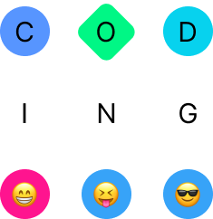
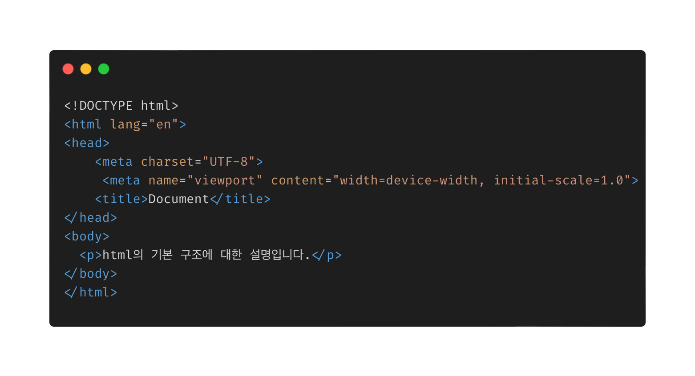
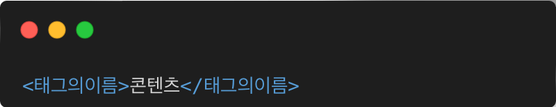
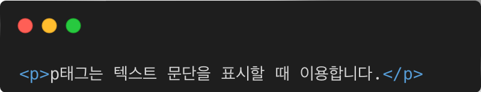
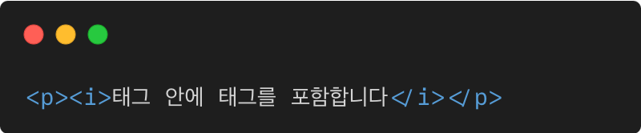
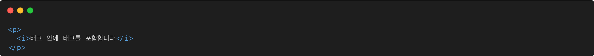

HTML은 "HyperText Mark-up Language"의 약자로 웹사이트의 모습을 기술하기 위한 마크업 언어입니다. 최초 제안자는CERN의 물리학자 티머시 J. 버너스리입니다. URL, HTTP, WWW의 전신인 Enquire 등도 그가 세트로 개발하고 제안했습니다.
아래는 HTML의 기본 구조입니다.

① <!DOCTYPE html> : 현재 문서가 HTML5 문서임을 명시합니다.
② <head> : HTML 문서의 메타데이터(metadata)를 정의합니다.
- 메타데이터(metadata)란 HTML 문서에 대한 정보(data)로 웹 브라우저에는 직접적으로 표현되지 않는 정보를 의미합니다.
- 이러한 메타데이터는 <title>, <style>, <meta>, <link>, <script>, <base>태그 등을
이용하여 표현할 수 있습니다.
③ <title> : HTML 문서의 제목(title)을 정의하며, 다음과 같은 용도로 사용됩니다.
- 웹 브라우저의 툴바(toolbar)에 표시됩니다.
- 웹 브라우저의 즐겨찾기(favorites)에 추가할 때 즐겨찾기의 제목이 됩니다.
- 검색 엔진의 결과 페이지에 제목으로 표시됩니다.
⑤ <body> : 웹 브라우저를 통해 보이는 내용(content) 부분입니다.
⑥ <h1>~<h6> : 제목(heading)을 나타냅니다.
⑦ <p> : 단락(paragraph)을 나타냅니다.
태그의 기본 사용법
HTML은 웹 페이지에 콘텐츠를 표시하기 위해 사용하는 언어입니다. 어느 부분에 텍스트가 있어야 할지, 어느 부분에 이미지가 있어야 할지 등을 나타내는 것이 HTML의 역할입니다. 이러한 역할을 수행하기 위해 HTML은 '태그(tag)'라는 표기법을 사용합니다. 다음은 태그를 이용해 콘텐츠를 표시할 때의 기본적인 형태를 나타낸 것인데, 이를 통해 태그를 구성하는 각 요소의 역할을 살펴보겠습니다.
①
②
③



부등호(< >)
1번을 보면, <기호와> 기호로 묶인 부분이 바로 태그입니다. 태그는 여는 태그와 닫는 태그로 구분할 수 있는데, 여는 태그는 콘텐츠의 시작을 나타내고 닫는 태그는 콘텐츠의 끝을 나타냅니다. 여는 태그와 닫는 태그가 짝을 이루기 위해서는 태그의 이름이 같아야 하며, 닫는 태그에는 < 기호 바로 뒤에 / 기호를 붙여 여는 태그와 구별해야 합니다.
태그의 이름
태그의 이름은 해당 태그가 웹페이지에 어떤 콘텐츠를 표시하는지를 의미합니다. 예를 들어 텍스트 문단을 표시할 때는 'paragraph'의 약자인 'p'를 태그의 이름으로 사용하고, 이미지를 표시할 때는 'image'의 약자인 'img'를 태그의 이름으로 사용합니다.
콘텐츠
2번을 보면, <p></p> 태그 안에 텍스트 문단이 들어가 있습니다. 이처럼 여는 태그와 닫는 태그 사이에는 태그가 실제로 표시할 콘텐츠가 작성되어야 합니다. 태그를 위해 사용된 기호와 태그의 이름은 실제 웹페이지에는 표시되지 않습니다. 웹 브라우저는 여는 태그와 닫는 태그 사이에 작성된 콘텐츠를 태그의 이름에 맞게 해석한 후 화면에 표시합니다.
태그 안의 태그
3번을 보면, 여는 태그와 닫는 태그 사이에는 태그가 표시할 콘텐츠가 포함되는데, 이때 또 하나의 새로운 태그가 콘텐츠로써 태그 안에 포함될 수도 있습니다. 예를 들면 다음과 같은 형태의 태그를 작성할 수도 있습니다.
태그 작성 전 알아야 할 추가사항
작성 형태를 아는 것 외에도, 올바른 태그 작성을 위해서 알아두어야 할 사항들이 몇 가지 더 있습니다.
여는 태그와 닫는 태그를 정확히 입력해야 한다
여는 태그는 콘텐츠의 시작을, 닫는 태그는 콘텐츠의 끝을 나타냅니다. 따라서 시작과 끝을 정확하게 입력하지 않으면 웹페이지의 모습이 의도한 바와 다르게 출력될 수 있습니다. 여는 태그와 닫는 태그의 짝이 맞지 않거나 일부 누락된 경우에도 웹 브라우저는 웹페이지를 렌더링할 수 있으므로 태그 작성 단계에서부터 실수를 잘 점검해가며 작업할 필요가 있습니다.
들여쓰기를 적절하게 사용하는 것이 좋다
바로 위에서 살펴 본 태그의 포함 관계는 몇 번이고 겹쳐질 수 있습니다. 그런데 그러다 보면 코드의 가독성이 나빠져 코딩 작업에 불편을 초래합니다. 따라서 HTML 소스 코드를 작성할 때는 태그 사이의 포함 관계에 따라 적절한 공백을 두어 표현하는 것을 권장합니다. 아래 코드는 앞서 살펴 본 p태그가 i태그를 포함하는 코드 예에 적절한 들여쓰기를 추가하여 표현한 예입니다.

퀴즈를 풀어보자